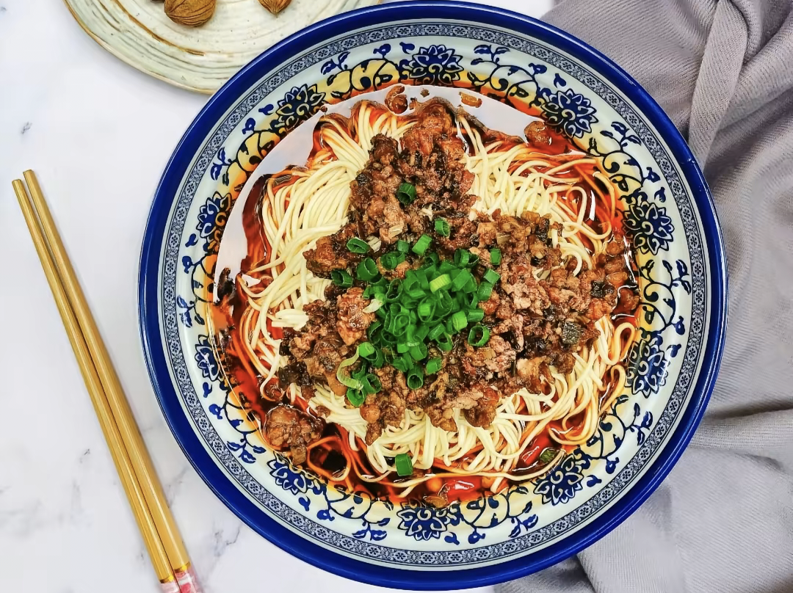

美食推荐

重庆小面
重庆小面是一款发源于重庆的汉族特色小吃，属于川菜面食。它以麻辣味型为特点，主料为新鲜小麦粉面条。重庆小面是重庆四大特色之一，是重庆面食中最简单的一种。狭义上的小面是指麻辣素面，但在老重庆的话语体系中，即使加入牛肉、杂酱、排骨等豪华浇头的面条也称作小面。

凉虾
重庆凉虾是一种特色小吃，产于重庆并十分常见。它的制作材料是米浆，因为形状像虾，所以被称为凉虾。这种小吃滑糯爽口，柔软清甜，是人们消暑的一道甜品。在重庆，凉虾不仅可以在街边找到，各大火锅店里也都有，用来解辣。在吃时，可以加入红糖水、桂花蜜、山楂碎等配料，增加口感。

熨斗糕
熨斗糕，这道重庆地区的特色小吃，以其独特的魅力征服了食客的心。它选用大米磨成的米粉浆作为主料，加入新鲜的鸡蛋、颗粒细腻的白糖和香甜的蜜桂花等天然食材，充分搅拌均匀后，缓缓倒入专制的烙碗内。在精准的火候控制下，师傅们精心翻烙，直至两面呈现出诱人的金黄色。

九宫格火锅
九宫格火锅是重庆地区的一种特色，将火锅分成九个格子。这种设计起源于当时的码头火锅，为方便码头工人拼桌吃火锅而发明的。九宫格火锅的九格味道是一样的，并不是九个口味。九宫格火锅可以根据不同位置的沸腾情况放不同的食材，使得火锅更有规律，不会变成一锅乱炖。